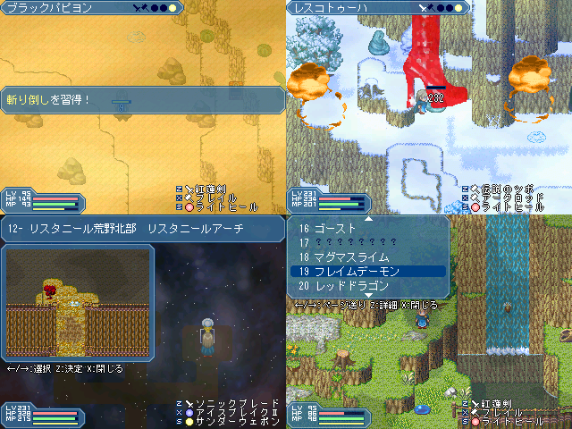

作品紹介
| ≪ Back | トップページ | 作品一覧 | Next ≫ |
| No005. - ニルダ戦記 |

| 使用ツール：2000 |
| 作者：たぬき |
| ジャンル：RPG |
| 動画・配信：基本的に可 |
|
第三回紅白 No.001『ニルダ物語』の続編のようで そうでもないような作品です。 決してピュアでは無く、甘くも辛くもない オリジナルVIPRPGです。 ・テンポ重視の簡単操作なシームレス戦闘 ・広がりをみせる様々なフィールド ・自由に成長させられるポイント割り振りシステム 最高レベルは999 ・本シナリオ＋おまけの冒険の舞台 そして２つのエンディングへ…… が冒険の舞台となります。 前作を知らない人でも問題なくお楽しみ戴けます。 知っていればよりお楽しみ戴けるかもしれません。 暖かいココアを飲みながら 最後まで遊んでくれると嬉しいです！！ 現在、ほぼ完成につきテスト中 ※目標はバグ3つ以内 |
| 管理人コメント：はい来た、今回もやって来たよニルダが！ |
| ダウンロード(23.2MB) ① ② / 感想掲示板 ツイート |
更新情報・お知らせ
- 2012/01/10
- 本体修正 パッチ追加
- 2011/01/09
- 本体修正 パッチ追加
- 2012/01/02
- 本体修正 パッチ追加
- 2011/12/30
- 本体修正 パッチ追加
- 2011/12/29
- 本体修正 パッチ追加
- 2011/12/28
- 本体修正 パッチ追加
- 2011/12/14
- 提出
- 2011/11/02
- SS コメント変更
- 2011/10/30
- エントリー